6.810 Engineering Interactive Technologies (fall 2020)
Problem Set Series: Multi-Touch Pad
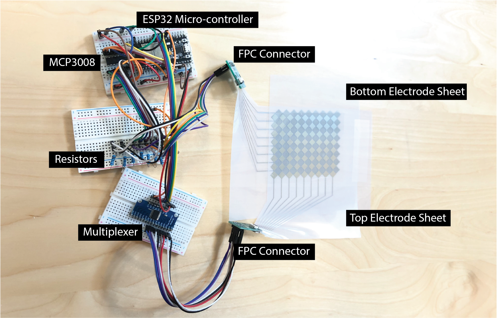
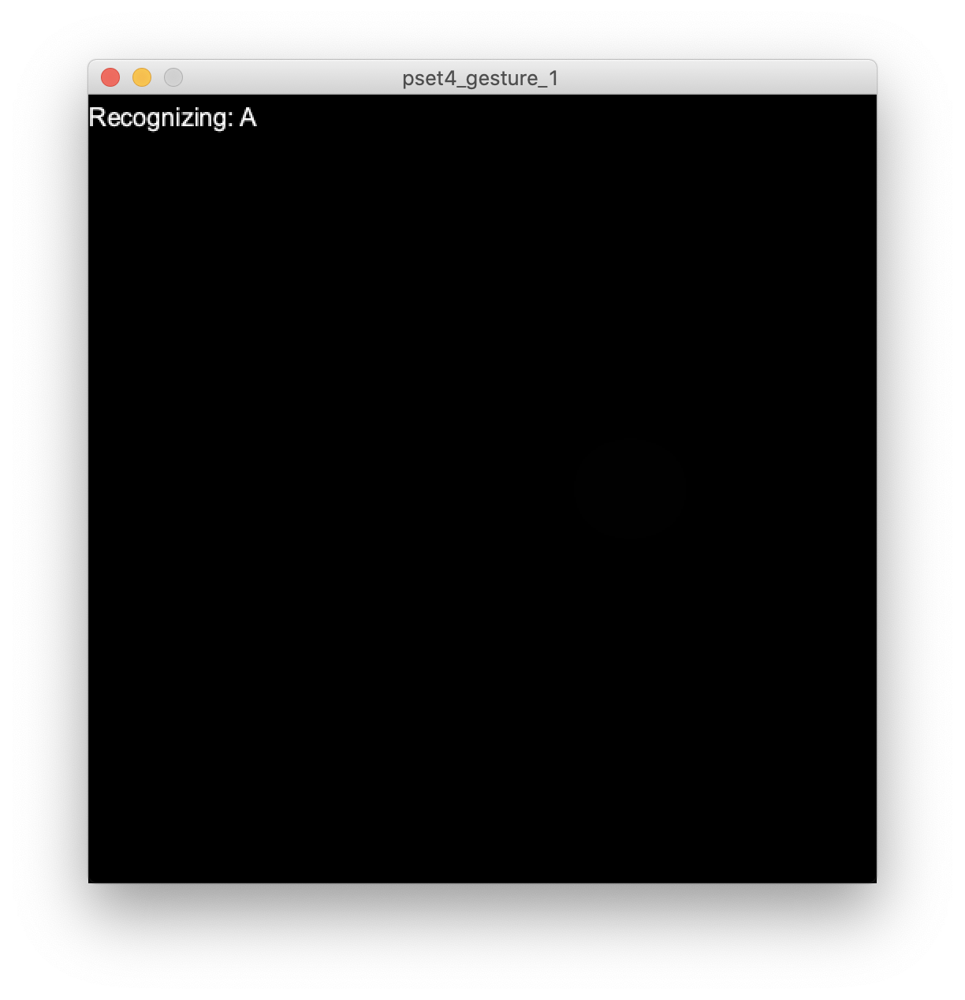
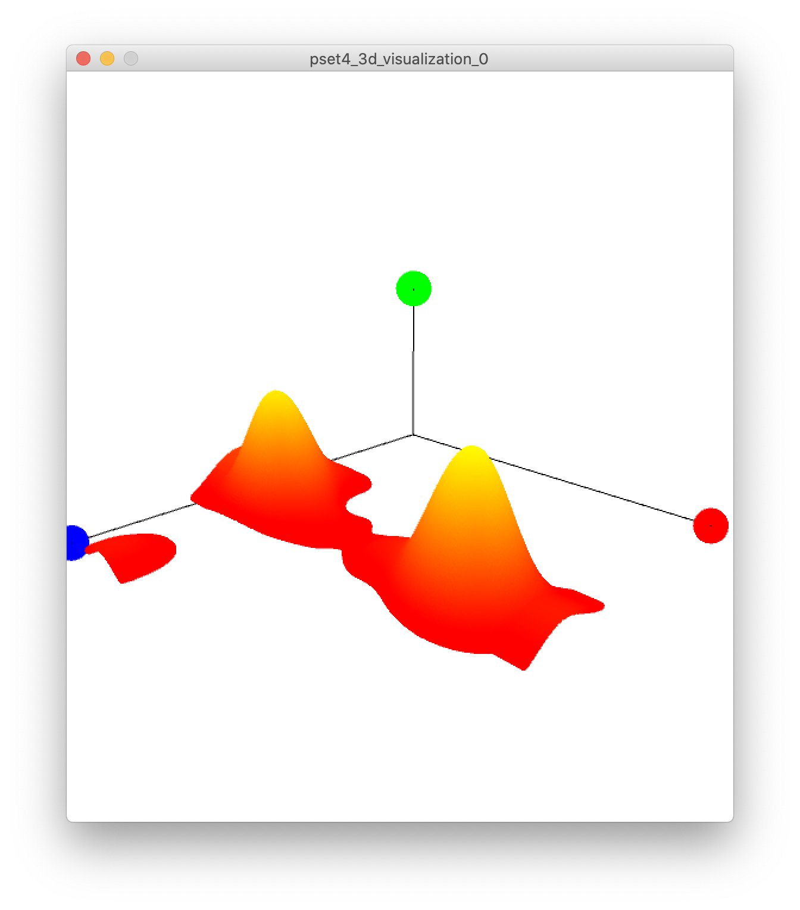
Problem Set 4 (due Friday, Nov. 6, 2020, 11.59pm)
Now that you have the Processing code that reads and visualizes sensing data in 2D, you are ready to extend it with two more functionalities:
- (1) Gesture Recognition: Enable the multi-touch pad to recognize different finger gestures (build on top of your PSet3 code).
- (2) 3D Visualization of Touch Pressure: Render the signal strength as a 3D shape (via new skeleton code).
(1) Gesture Recognizer
Let's first build the gesture recognizer.
The goal here is to be able to draw with your finger onto your multi-touch pad and have the multi-touch pad recognize what was drawn. For instance, if you swipe from left to right, your code should recognize that you made this gesture and if you draw an 'A' your code should know that an 'A' was drawn.
For this part of the PSet, you will be doing the following steps:
- Understand how the $1 Unistroke Recognizer works conceptually
- Import the Processing Library for the $1 Unistroke Recognizer
- Add a new gesture by giving it a name and recording a set of touch points that make up the gesture
- Connect the gesture to a function that is called every time the gesture is recognized
- Start gesture detection every time a touch point is recognized from the blob detection
- Visualize the gesture detection result on screen
Understanding the $1 Unistroke Gesture Recognizer
Luckily, you don't have to implement the gesture recognizer from scratch.
Instead, you can use the $1 Unistroke Recognizer, which is available as a Processing library.
$1 Gesture Recognizer Family: The $1 Unistroke Gesture Recognizer is part of the so-called $1 Gesture Recognizer family, i.e. a set of different gesture recognizers with different capabilities, such as single stroke gesture recognition, multi-stroke gesture recognition etc. It was first published at the HCI conference ACM UIST and you can find the UIST 2007 Paper here.
$1 Unistroke Gesture Recognizer: In this Pset, we are going to use the $1 Unistroke Recognizer from this family since it is the only one that is available for Processing as a library. Before we get to the implementation, let's briefly review what gestures this recognizer can detect and what gestures it cannot detect.
What Gestures can the $1 Unistroke Recognizer Detect?
2D Recognizer: First, the $1 Unistroke Recognizer is a 2D recognizer. Therefore, you can use it for your 2D multi-touch pad but it is not suitable for interaction in 3D space, such as when you make gestures in front of a Kinect (except if you draw them into a 2D plane).
Unistroke: Second, the recognizer is a 'unistroke' recognizer. What this means is that it can only recognize gestures that are made by one finger in one continous stroke. For instance, consider the 2 gestures shown below designed for the letter "A". The left one is written in one continous stroke and thus can be recognized by the $1 Unistroke recognizer. The right one, however, is written in two separate strokes and thus cannot be recognized. Similarly, you can recognize a single finger swipe left/right gesture, but you cannot recognize a zoom gesture with two fingers since that would require combining two separate strokes into one gesture. The $1 family has also has a multi-stroke recognizer but as mentioned previously it is not available as a library for Processing.
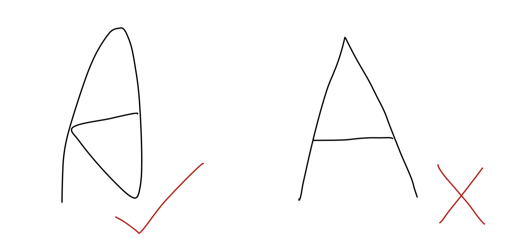
Stroke Orientation: The gesture recognizer ignores the stroke 'orientation'. Consider the example below, which shows the same gesture but executed in a different orientation on the multi-touch pad. The gesture recognizer automatically compensates for the change in orientation and will detect that both gestures are the same.
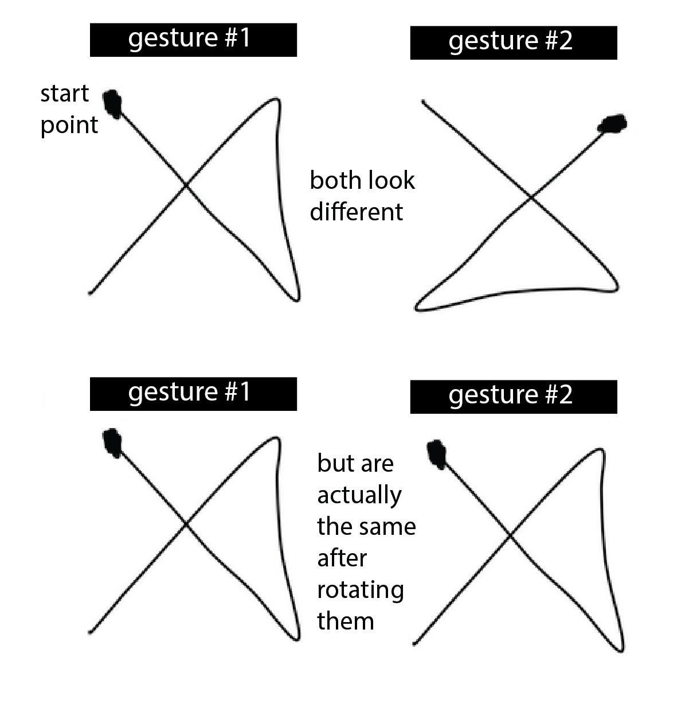
Stroke Direction: While the recognizer ignores stroke orientation, it does recognize stroke direction, i.e. the vector direction of the line along which your finger moves. For example, the two gestures shown below are visually identical on first sight but in the first gesture we start on the top left, while in the second gesture we start on the bottom left. Therefore, although visually the same gesture, the $1 algorithm is able to distinguish them as two different gestures.
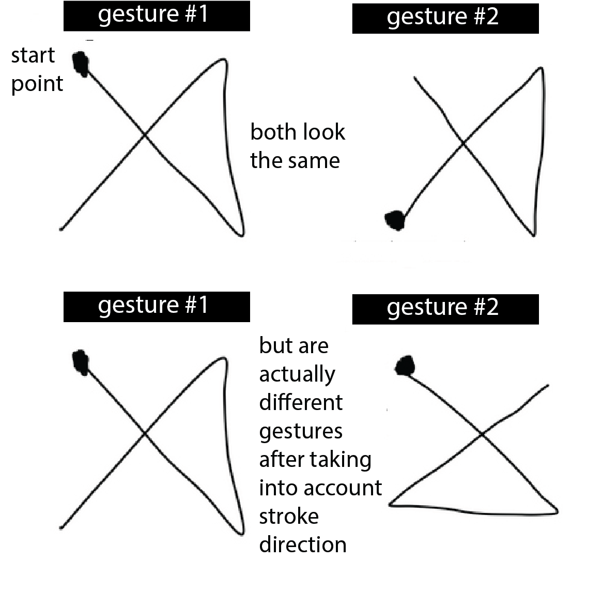
Try the Gesture Recognizer for yourself on the Demo Webpage
We recommend before you move on, you try out the interactive demo of the $1 Unistroke Recognizer that you can find here on this website. Scroll down to the 'Demo' section and you see 16 different gestures you can draw into the gray window on the right side. Draw each of the gestures once to get a feel for how different gestures are designed and how well they can be classified. After you drew a gesture, you will see its classified name at the top of the window. You can also make your own gesture by first drawing your custom gesture into the gray drawing window and then giving it a name in the 'Add as example of custom type:' field, then click 'Add'. If you now draw your custom gesture again, it should be correctly classified.
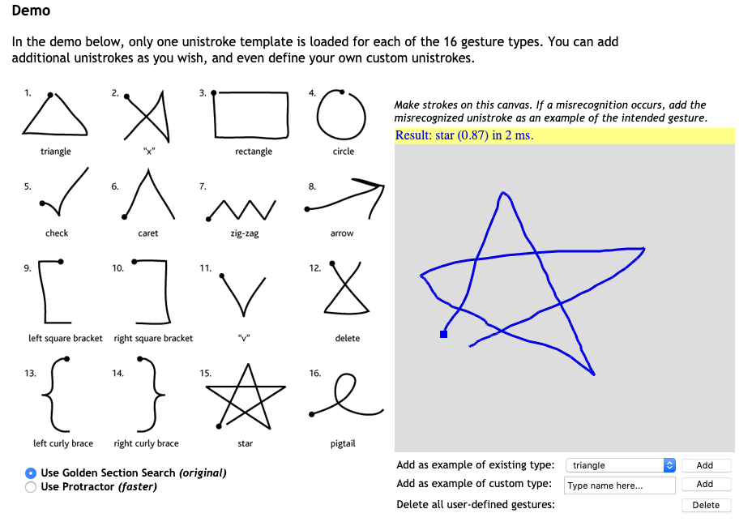
Processing Library for $1 Unistroke Recognizer
Now that you know a bit more about what the $1 Unistroke recognizer can and cannot do, you can move on to using the recognizer for your multi-touch pad.
As mentioned previously, the authors of the UIST'07 paper provide the $1 Unistroke Recognizer as a Processing library with all the functionality you saw above.
Start by importing the $1 Unistroke Recognizer library by going to Sketch -> Import Library and finding it through the search bar.

Next, import the $1 Unistroke Recognizer library into your PSet3 Processing code.
import de.voidplus.dollar.*;
Construct a new object of the one dollar recognizer with:
OneDollar oneDollar = new OneDollar(this);
Finally, turn on console plotting for the gesture recognizer using the line below.
If this is on then whenever the gesture recognizer detects a gesture it immediately prints it on the console and also gives you the similarity percentage with one of the template gestures, so this is a useful thing to have turned on.
oneDollar.setVerbose(true); \\activates console plotting
Add finger gesture
Next, you will create a new finger gesture.
For starters, we will use a 'V' gesture, which is one of the most reliable ones that can be detected. Other reliable gestures are triangle, zigzag, checkmark, and anything that has some unique features. A circle, for instance, is one of the harder gestures to recognize due to its smooth outline that is easily susceptible to noise.
To create a new finger gesture, you can use the following function:
oneDollar.learn(String gesture-name, int[] x-y-coordinates); // {x1, y1, x2, y2, x3, y3, x4, y4, ...}
Recording x/y coordinates for New Finger Gesture
While you could obtain the x-y-coordinates for your gesture template by tracking finger input from your multi-touch pad, we recommend not doing this and instead recommend that you draw the gesture with the mouse on screen and record the x-y coordinates from the mouseDragged() event.
The reason for this is that the drawing with the mouse will give you very clear tracking points for creating your template gesture. Later on, when you draw the gesture with your multi-touch pad during actual use, this will be more fault resistant. In contrast, if you record your template gesture on the multi-touch pad, you will already have some noise in the data and it will be harder to match a gesture when there is additional noise during actual use later on.
Below you see a recording of all the coordinates for our 'V' gesture that we then feed into the learn() function to add our new gesture. Do the same before moving on.
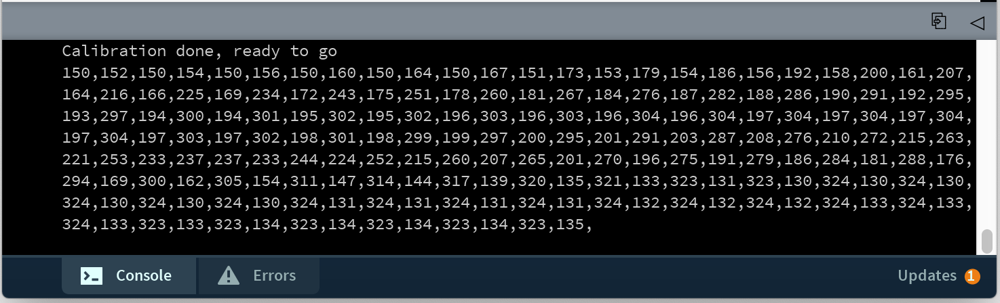
Connect Finger Gesture to a Callback Function
Now that you have added your custom 'V' finger gesture, you next have to define which function should be called when the gesture is being detected. Such a function is called a callback function and it will be triggered every time the algorithm detects the corresponding finger gesture.
You can bind the finger gesture to a callback function via the following command:
oneDollar.bind(String gesture-name, String callback-function-name);
Note that the call-back-function-name is only the same of the function without parenthesis and parameters.
You can either have each gesture have its own call-back function or you can also bind multiple gestures to the same call-back function via this line:
oneDollar.bind(String gesture-name1 gesture-name2 gesture-name3..., String callback-function-name);
Next, you need to implement the callback function.
The callback function always has to be in the format as shown below, i.e. contain the same number of parameters and parameter types and return void.
The function name and parameter names, however, are up to you.
void foo(String gesture-name, float percentOfSimilarity, int startX, int startY, int centroidX, int centroidY, int endX, int endY){
// do something when the gesture is detected
}
There are a lot of parameters in the function but for our purposes we can keep it simple.
If you bind one gesture to one function, all you need is to add some action in the function body.
If you bind more than one gesture to one function, you can use the 'String gesture-name' to figure out which gesture triggered the function and then proceed with the corresponding action in the function body.
The remaining parameters contain how confident the recognizer is that it actually detected the right gesture (percentOfSimilarity), the start point of the gesture (startX,startY), the end point of the gesture (endX,endY), and the centroid of the gesture. For our purposes, we don't need these but we still have to list them in the function header to match the template requirement of the call-back function.
Tracking the finger gestures
Now that you have defined how your gesture looks like and what function should be called when it is detected, you still have to tell your code when it should start tracking finger input.
We want to start tracking our gesture when our code detects a 'finger blob'.
Therefore, we need to add the tracking function below in the blob detection method where it determines if a finger was successfully detected.
oneDollar.track(int x-coordinate, int y-coordinate);
The x/y coordinate in the function are the x/y coordinate of your touch point.
Note that you don't have to 'stop' tracking. The track() function will only be executed when Processing goes through its infinite loop and detects a finger blob, i.e. knows a finger is present. If no finger has been present for a while, i.e. no new data is fed to the gesture recognizer, it will automatically determine that the gesture has ended and will provide its best guess at what gesture was executed.
Visualize Gesture Detection Result
Finally, once your gesture is detected, your callback function should visualize the detected gesture.
You can do this by writing the name of the detected gesture into the Processing UI window as shown in the top left corner of the images below.
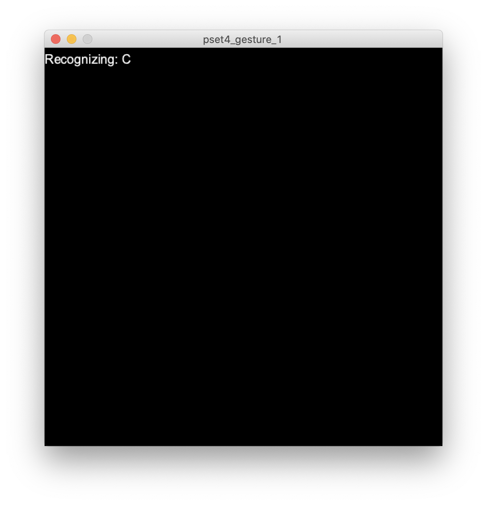
Create 3 Different Gestures
Implement 3 different finger gestures that can be recognized by your multi-touch pad.
For example, you can implement finger input for recognizing letters (A, C etc.), 2D shapes (triangle, circle etc.), and symbols (check mark etc.).
Note that in good gesture design, the gesture should be related to what function is being called. For instance, you cannot draw a 'star' and associate it with a 'smile'. Instead, it would be better to draw a 'half circle', which more closely resembles a 'smile'. Similarly, gestures cannot be too abstract. For instance, you cannot have your finger draw one straight line on the multi-touch pad and the system recognizes it as 'fish'. Instead, there are better one-stroke gestures that could represent a fish outline.
Take a short video of your gesture recognizer showing how you perform all three different gestures and how they are correctly classified and upload this video to your google drive.
(2) Visualize Touch and Pressure in 3D
So far you have only recognized and visualized touch points.
Next, you will extend your code to also recognize and visualize touch pressure.
To recognize touch pressure, you can look at the brightness of the touch point (and why would it be brighter if I pressed harder? because more finger area touches there leading to more cumulate capacitance?)
To visualize the touch pressure, you are going to use a 3D visualization.
The height of the touch point represents how much pressure is applied.
Below you can see an example: on the left side only little pressure is applied and the touch bar is small, whereas on the right side a lot of pressure is applied and the bar is much higher.
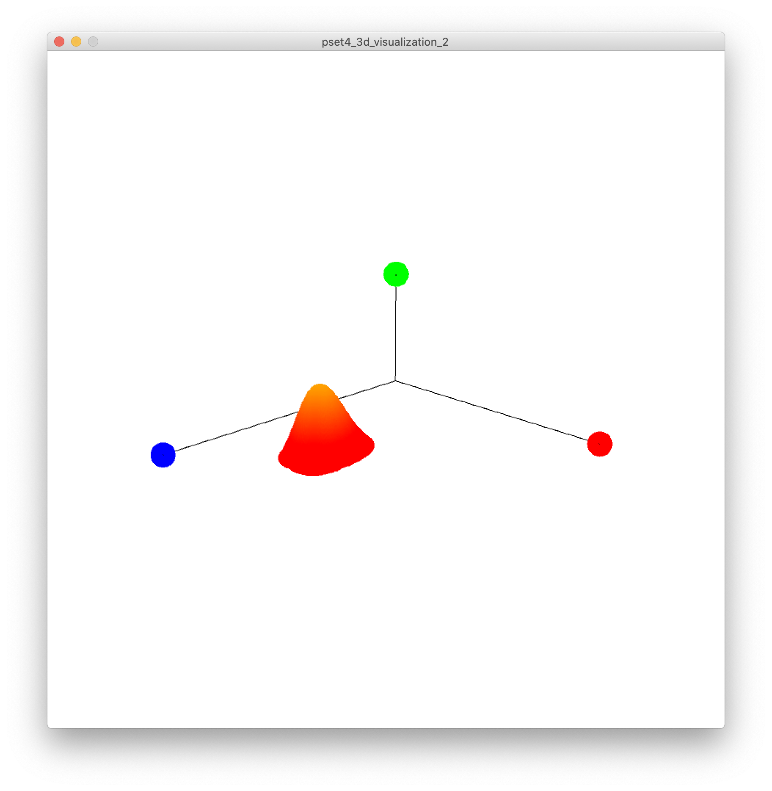

For this part of the PSet, you are going to do the following three steps:
- draw three axis for x, y, z on screen for the 3D visualization coordinate system
- implement functionality to move the camera around the 3D visualization scene via keyboard input, i.e. the camera will be able to zoom in/out of the scene, rotate around the scene, and move up/down with respect to the scene when the corresponding keys are pressed
- update the 3D visualization with the touch points and touch pressure based on interpolated PImage of your touch points from Pset3
Download Skeleton Code
Start by downloading the skeleton code for the PSet4 3D visualization from here.
Once you opened the skeleton code, you will see that there are some new variables and functions that are related to the 3D visualization (e.g., the axis and camerapos parameters and the drawAxis(), cameraViewControl() and update3DImage() functions). The remaining functions (readSerial(), setBaseLine(), substractBaseLine(), setColors(), and interpolate()) are from pset3 and you only have to move your code over to fill them out.
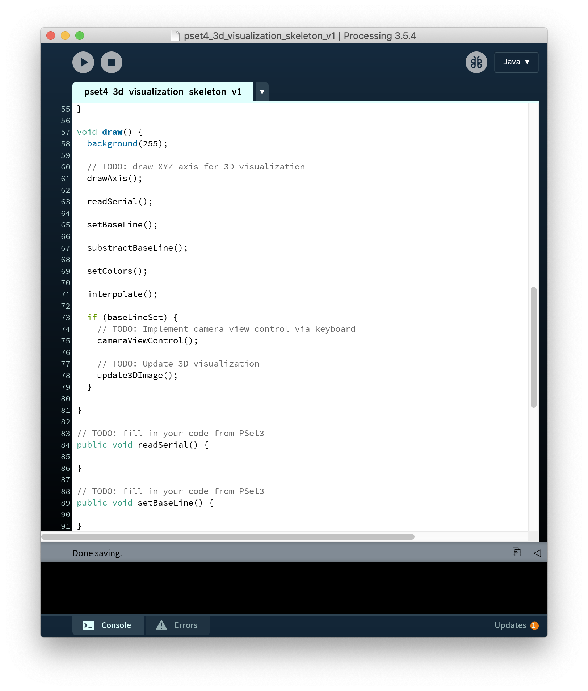
Drawing the XYZ axes for 3D Visualization
You will start by drawing the XYZ axes for 3D visualization in the drawAxis() function.
You can draw them as a standard Cartesian coordinate system. Note that we are in 3D now, not 2D so you need 3 coordinates for defining the positions of your points/lines.
Cartesian 3D systems are often described as "left-handed" or "right-handed."
If you point your index finger in the positive y direction (down) and your thumb in the positive x direction (to the right), the rest of your fingers will point towards the positive z direction.
It's left-handed if you use your left hand and do the same.
In Processing, the system is left-handed, as follows:
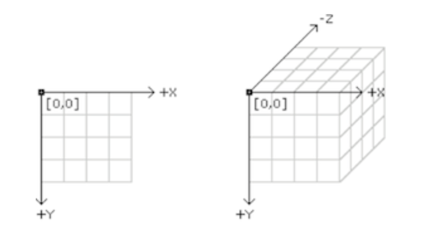
The length of the X and Z axes should be the width and height of your interpolated PImage.
The length of the Y axis should be slightly higher than the maximum pixel value (brightness) of your interpolated PImage so you have some space at the top.
Notice that you should draw the Y axis (and later sensing data on y axis) in negative direction so it is pointing "up".
In addition to generating the axis lines, you need to color the axis by drawing a colored dot at their end.
We will use red for the x-axis, green for the y-axis, and blue for the z-axis (since "RGB" corresponding to "XYZ").
Once you finish the drawAxis() function, you should have something that looks like this (note that the height of your y-axis depends on the brightness values you get in your PImage and may not be shown to scale here):
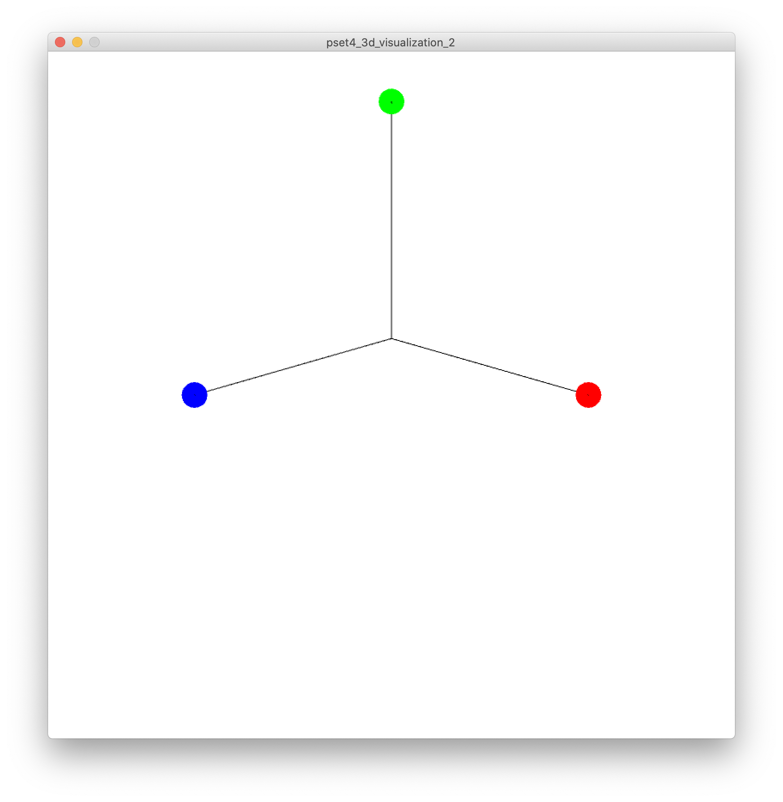
Moving the Camera Around the 3D Visualization via Keyboard Input
Without camera motion, it is kind of hard to see if you really succeeded in drawing your axis correctly or if it just 'looks' correct from the 2D perspective we have but in reality the lines are all over the place in 3D space.
To facilitate debugging of issues like this, we will implement camera control, i.e. you will be able to move around the camera by pressing keys on the keyboard to zoom in/out and move the camera around the scene.
Initialize Camera in Processing
Processing provides a Camera Class for implementing camera movement. You can find the camera class documentation here.
To get started, initialize a new camera in Processing with the following method:
camera(float eyeX, float eyeY, float eyeZ, float centerX, float centerY, float centerZ, float upX, float upY, float upZ);
Let's look at what all these parameters are:
eye x/y/z: This is the camera's 3D position in space, i.e. where it would be physically located if it was a camera in real-life.
center x/y/z: The center of the scene defines how the camera is angled. For instance, if the center of the scene is lower than the camera, then the camera will look down, resulting in a bird's eye view. Similarly, if the center of the scene is higher than the camera, then the camera will look up, resulting in a frog's eye view.
up x/y/z: This defines which axis is facing upwards. You can use values from 0 to 1 to -1. If you use a -1, the camera will be flipped and face up-side-down. In our case, we want to keep it simple and use for x,y,z 0,1,0 since y is pointing upwards.
When you initialize your camera, you may want to start by using the default parameter values we provide in the code, which should give you a reasonable start for a good viewport. If you see nothing in your view after initializing the camera, you may be facing the wrong way with you camera, e.g. the scene may be behind you, which causes you to only see a white screen with nothing on it.
Zooming in/out
Moving the camera position (eye position) closer or further away from the 3D visualization results in a zooming in/out effect (see images below).
Implement a zooming effect so that when you press the key "E" you zoom in and if you press the key "Q" you zoom out (i.e. change the distance between camera position and the 3D coordinate origin).
 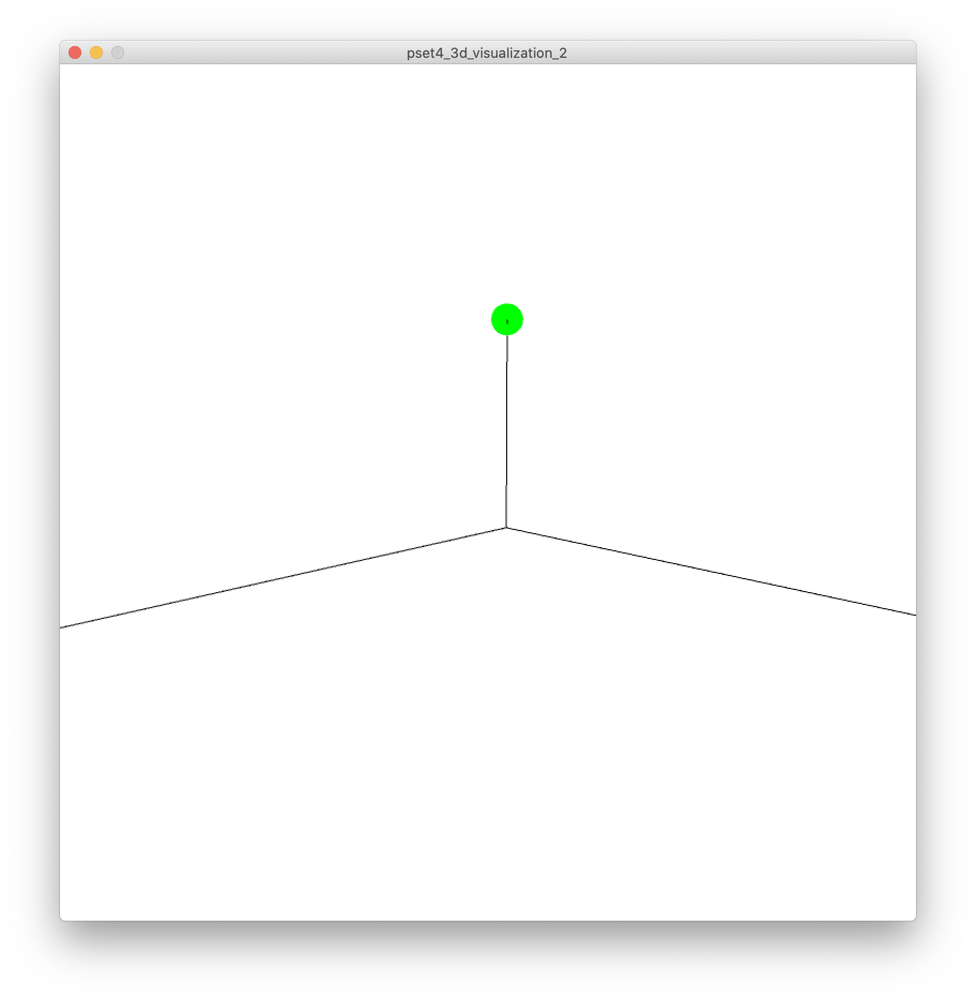
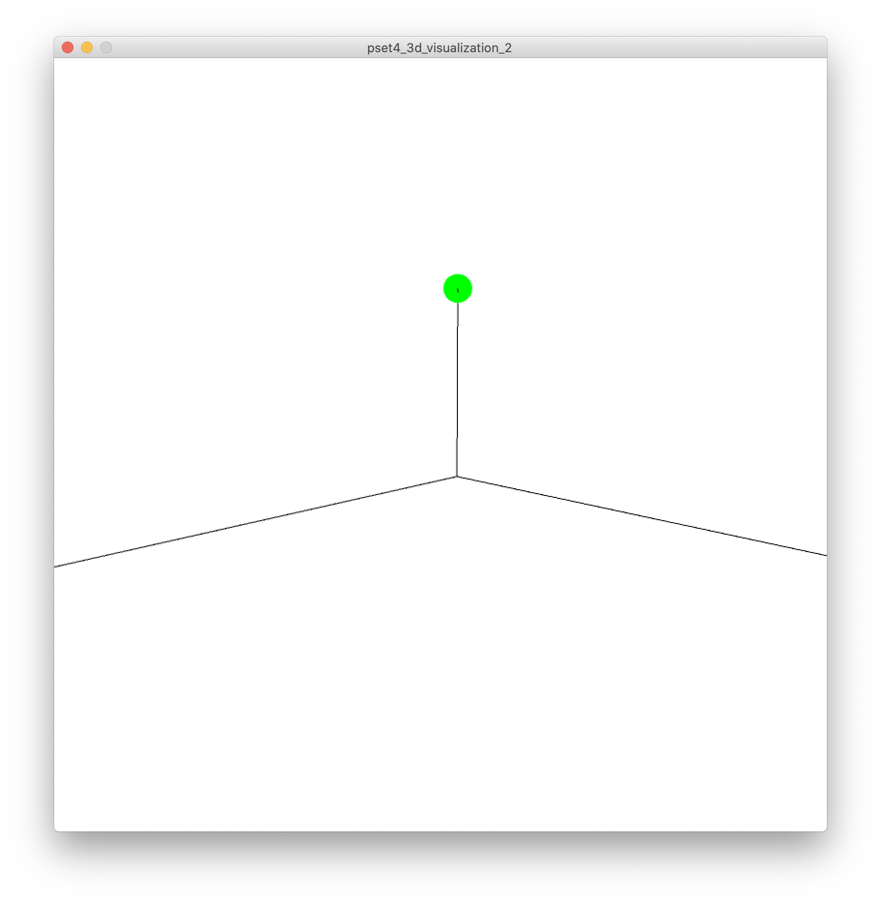
Rotating in the X-Z Plane
To move the camera in the x-z plane around the 3D visualization, you need to keep it at the same distance from the 3D visualization at all times (see images below).
This is best accomplished by moving the camera on a circle around the scene.
Update the camera position (eye position) to accomplish this (you have to do some math here, check out how radians work again to help you with this).
If you press the key 'D' you should rotate right and if you press the key 'A' you should rotate left.
Note that you only have to update the camera's position.
Since you set the scene's center x/y/z to be the 3D visualization, the camera will automatically rotate while moving around the 3D visualization to always look at it.
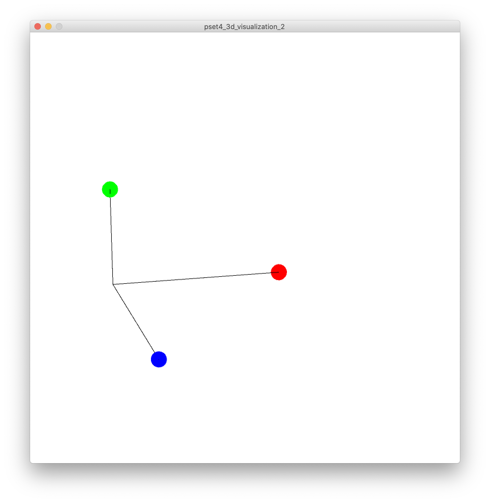
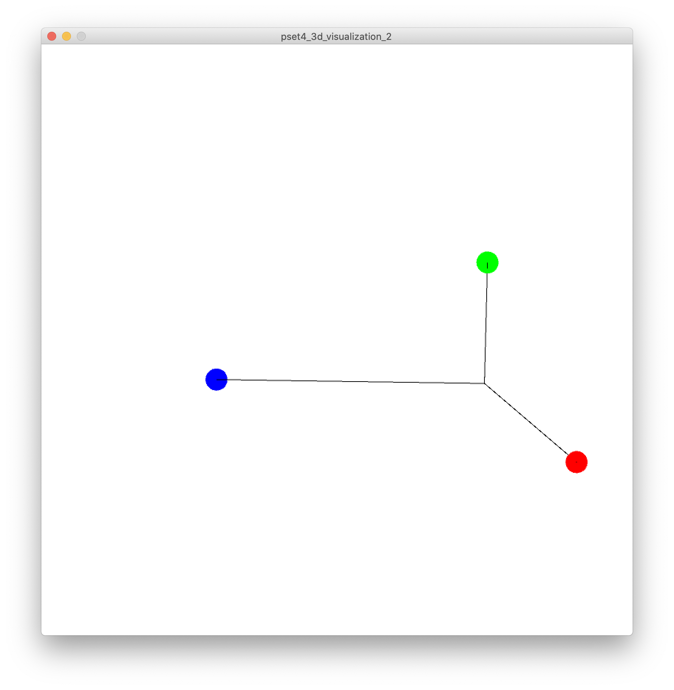
Changing the Camera's Y-Axis Height
To move the camera along the y-axis, you need to change the camera's eye position again, but this time only along the y-axis.
Pressing 'W' on the keyboard should move the camera up and pressing 'S' on the keyboard should move the camera down along the y-axis as shown in the image below.
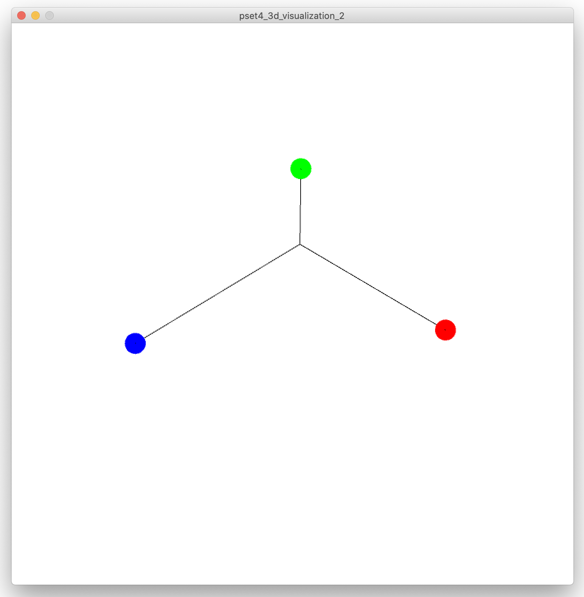
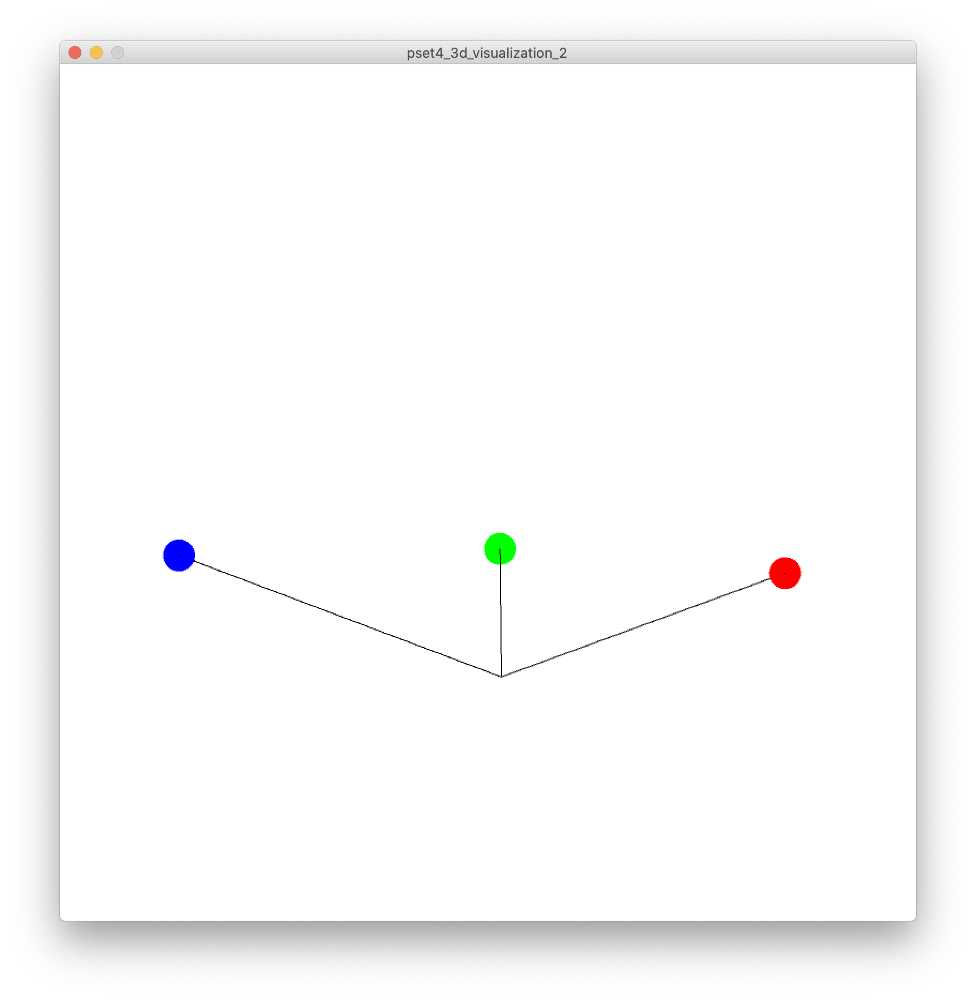
Finally, if you are experiencing some lagging in your application, you can also set the frame rate for the camera for better performance using the line below:
frameRate(30);
Draw the Touch Points and Touch Pressure into the 3D Visualization
Next, you will draw the touch points and the touch pressure into the 3D visualization based on your interpolated PImage from pset3.
Drawing 3D Points in Processing
To implement the touch points, you will create a set of 3D points, where the X,Z coordinates are the row & column number of the pixel on the PImage, and the Y-coordinate is the interpolated value of the pixel.
As mentioned previously, the brighter pixels are in an area the more pressure was applied to this area.
As a result, the brighter a pixel, the higher the touch bar will be at this point.
Mapping the Y-Height to a Color Gradient
You also need to color the touch bars with a color gradient that represents the "height" (i.e. y-axis coordinate) information.
We chose a color gradient of red when only touched with light pressure and yellow when touched with high pressure.
You can choose your own color gradient, just make sure that the colors are very different so you can actually see a difference.
To implement the y-height to color mapping, you may find it helpful to use the map() function again that you already used in pset3.
The resulting 3D visualization should look like something in the following.
One finger touching:
Two fingers touching:
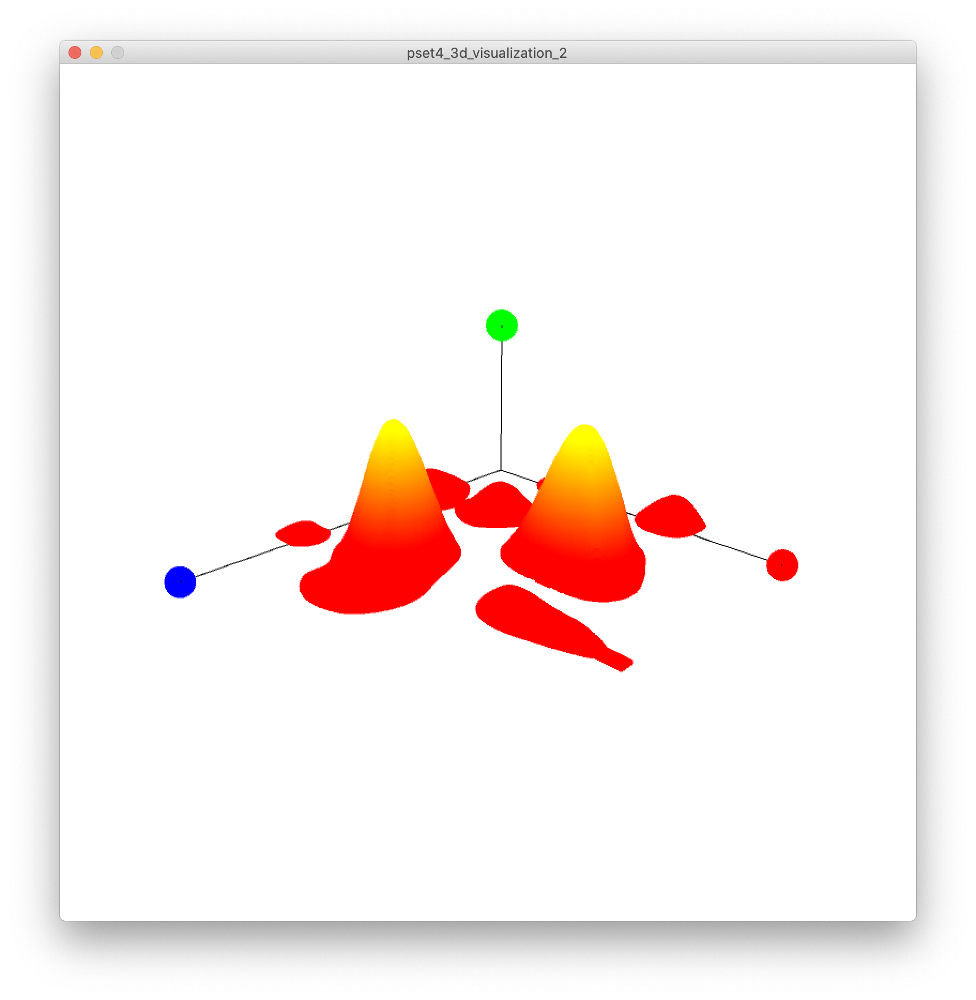
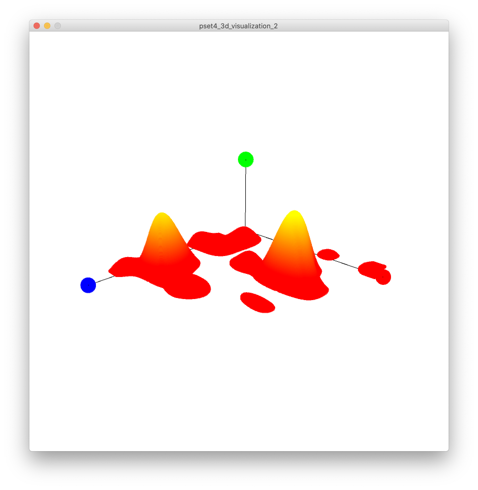
Note that all this noise is because we use the PImage that also contains brightness values outside the recognized 'finger blobs'. If you want a cleaner visualization, you can create a new PImage that has all pixels black except those pixels that belong to a blob. Note that this is not mandatory for this pset but if you'd like some clean output you can experiment with this.
Upload your Processing Code and Pictures of your Visualization
For grading, please upload the following to your google drive student folder:
- Gesture Recognizer
- a drawing on paper that shows your 3 custom finger gestures so we know which gestures you implemented, use the same notation as in the pset to indicate the start point for executing the gesture
- the .pde file of your Processing program
- 3 photos showing your Processing UI successfully recognizing the 3 different finger gestures
- a short video showing your Processing UI successfully recognizing the 3 different finger gestures (take the video so that the multi-touch pad and Processing Window are seen at the same time)
- 3D Visualization
- the .pde file of your Processing program
- 3 photos showing your Processing UI when no finger, one finger, and two fingers touch the multi-touch pad with different pressure levels
- a short video showing your Processing UI when no finger, one finger, and two fingers touch the multi-touch pad with different pressure levels (take the video so that the multi-touch pad and Processing Window are seen at the same time)
Grading
We will give 25 pts in total:
- 5pts: you implemented 3 different gestures using the learn(), bind(), and track() functions from the $1 Unistroke Recognizer
- 5pts: you submitted a drawing showing all three gestures you implemented and show in the video that all three gestures are correctly recognized
- 5pts: the x,y,z axis are correctly drawn for the 3D visualization and the touch / pressure mapping is correctly rendered, which you show by having at least 2 fingers touch simultaneously
- 5pts: the camera motion for zooming in/out, rotating the camera in the x/z plane and moving the camera up/down are correctly implemented
- 5pts: the remaining 5pts will be given for creating presentation materials for your multi-touch pad, i.e. drawing a rotoscope (1.5pts), taking some high-quality photos (1.5pts) and making a short 2-3 sequences video (2pts). This will be part of the weekly Friday labs and you will work on this over the next weeks in small steps. We will provide more information on this shortly.